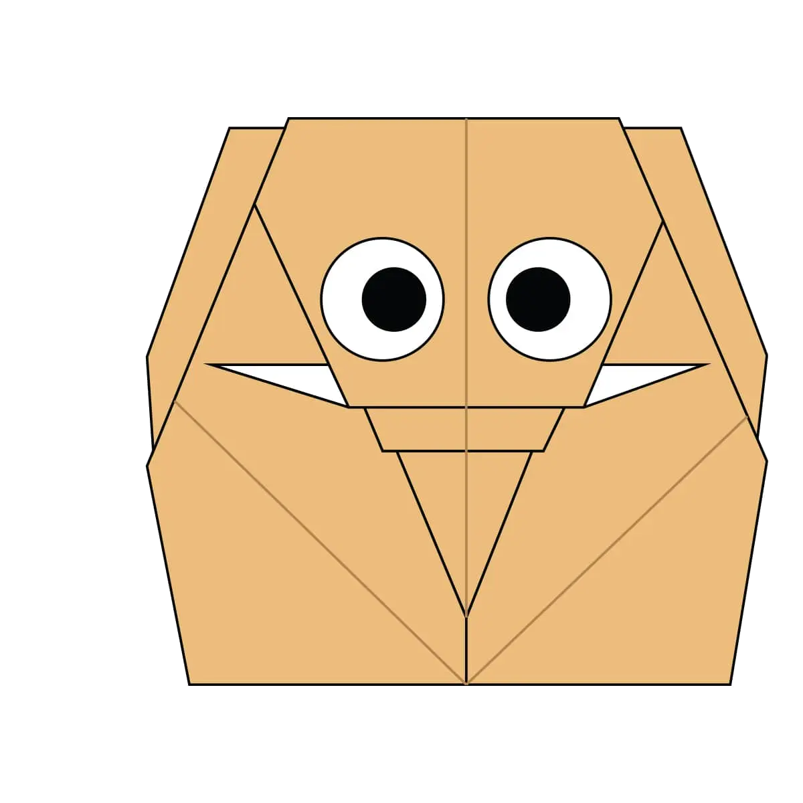
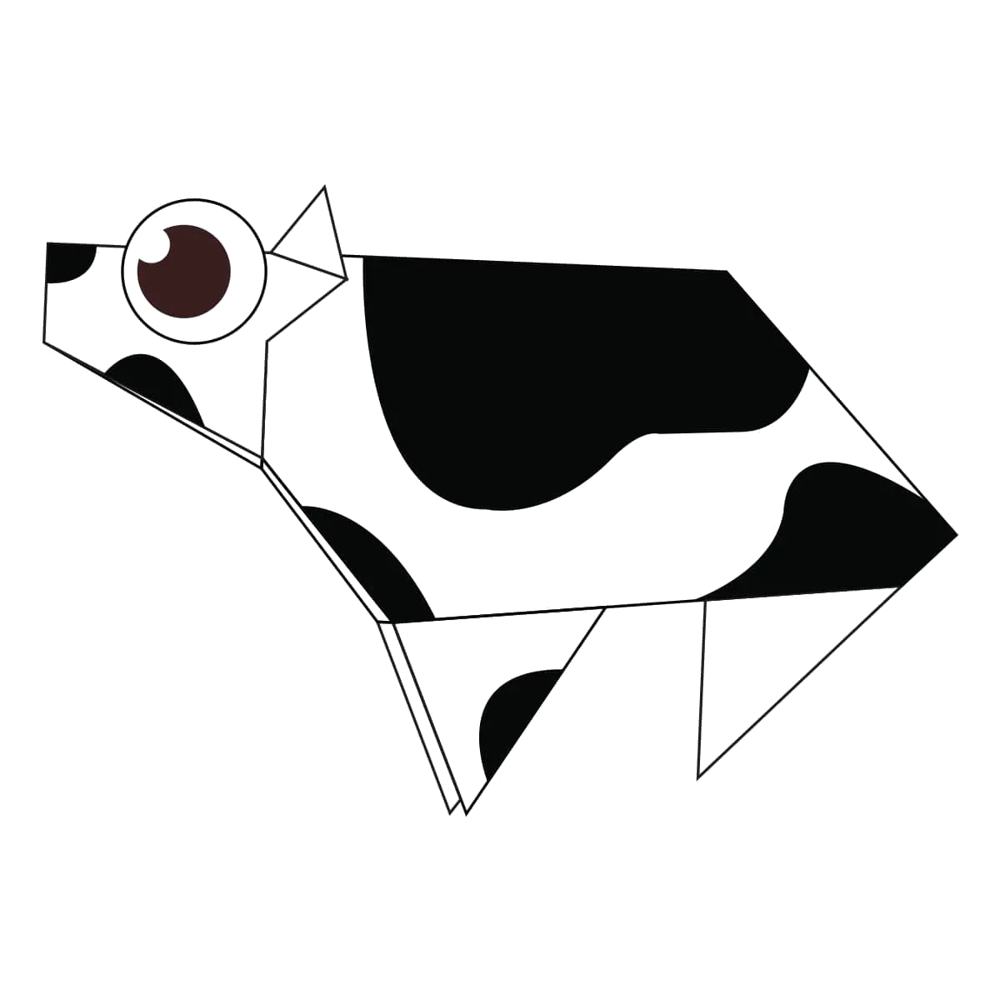
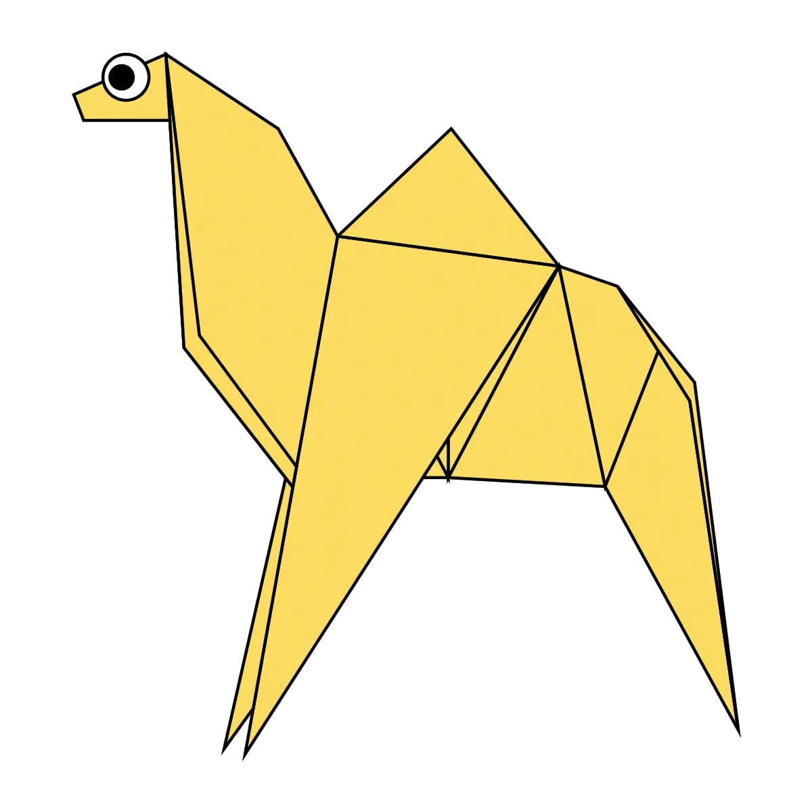
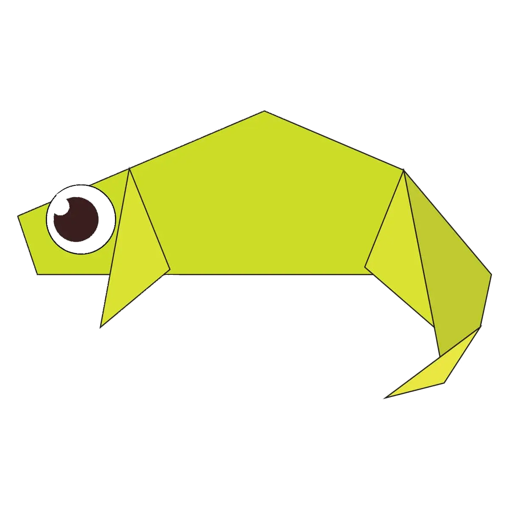
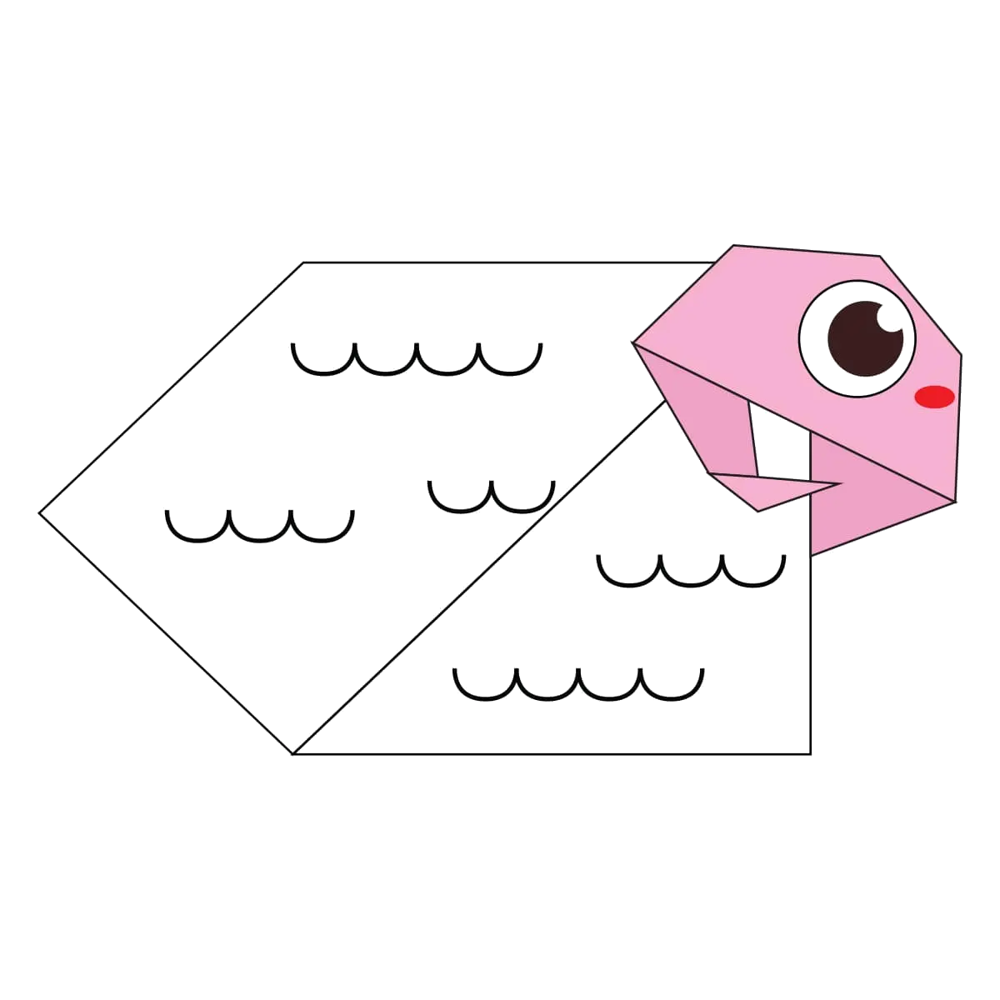
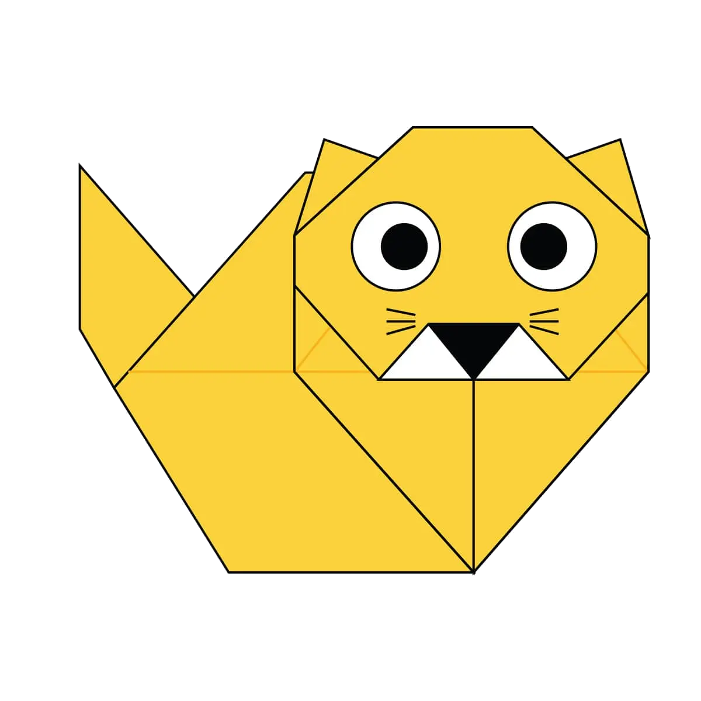

Orgami's by me
About Us
Follow Us
This are some of the Orgami's.

Elephants need up to 150kg of food per day – that's around 375 tins of baked beans although half of this may leave the body undigested. They eat so much that they can spend up to three-quarters of their day eating.
Elephants communicate in a variety of ways - including sounds like trumpet calls (some sounds are too low for people to hear), body language, touch and scent. They can also communicate through seismic signals - sounds that create vibrations in the ground - which they may detect through their bones.
Amazingly, elephant calves are able to stand within 20 minutes of being born and can walk within 1 hour. After two days, they can keep up with the herd. This incredible survival technique means that herds of elephants can keep migrating to find food and water to thrive.

Cows can sleep while they’re standing
Cows spend about 10 hours a day lying down.
There are approximately 98 million cows in the U.S.
The average body temperature of a cow is 102 degrees Fahrenheit.

Camels can completely shut their nostrils during sandstorms.
When a camel finally does find water, he can drink up to 40 gallons in one go.
Camels are very strong and can carry up to 900 pounds for 25 miles a day.
Camels can travel at up to 40 miles per hour – the same as a racehorse!

There are 59 unique species of chameleon live on the island. This is over a quarter of the world’s 202 species.
Chameleon has a veiw of 360 degrees.
A chameleon can live upto 10 years.

A study revealed that sheep can recognize up to 50 other sheep faces, and remember them for two years.
There are more then 10000 species of sheeps.

Cats can jump up to six times their length.
Cats are nearsighted, but their peripheral vision and night vision are much better than that of humans.
Cats are believed to be the only mammals who don’t taste sweetness.